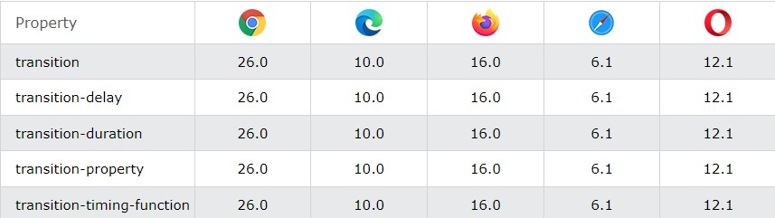

CSS Transition
CSS Transition cho phép bạn thay đổi các giá trị thuộc tính một cách trơn tru, trong một khoảng thời gian nhất định.
Di chuột qua phần tử bên dưới để xem hiệu ứng chuyển tiếp CSS:
Trong phần này, chúng ta cùng tìm hiểu về các thuộc tính sau:
- trasition
- trasition-delay
- trasition-duration
- trasition-property
- trasition-timimg-function
Các trình duyệt hỗ trợ cho trasition
Các số trong bảng chỉ định phiên bản trình duyệt đầu tiên hỗ trợ đầy đủ thuộc tính.
Làm thế nào để sử dụng transition CSS?
Để tạo hiệu ứng chuyển tiếp, bạn phải chỉ định hai điều:
- thuộc tính CSS mà bạn muốn thêm hiệu ứng vào
- thời gian của hiệu ứng
Lưu ý : Nếu phần thời lượng không được chỉ định, quá trình chuyển đổi sẽ không có hiệu lực, vì giá trị mặc định là 0.
Ví dụ sau đây cho thấy phần tử div màu đỏ 100px * 100px. Phần tử div cũng đã chỉ định hiệu ứng chuyển tiếp cho thuộc tính width, với thời lượng 2 giây:
Ví dụ
width : 100px;
height : 100px;
background : #4CD6ED;
transition : width 2s;
}
Hiệu ứng Transition sẽ bắt đầu khi thuộc tính CSS được chỉ định (chiều rộng) thay đổi giá trị.
Bây giờ, chúng ta hãy chỉ định một giá trị mới cho thuộc tính width khi người dùng di chuột qua phần tử div:
Thay đổi một số giá trị thuộc tính
Ví dụ sau thêm hiệu ứng chuyển tiếp cho cả thuộc tính width và height, với thời lượng 2 giây cho chiều rộng và 4 giây cho chiều cao:
Tốc độ của Transition
Thuộc tính transition-timing-function chỉ định đường cong tốc độ của hiệu ứng chuyển tiếp.
Thuộc tính chức năng thời gian chuyển tiếp có thể có các giá trị sau:
- ease- chỉ định hiệu ứng chuyển tiếp với bắt đầu chậm, sau đó nhanh, sau đó kết thúc chậm (đây là mặc định)
- linear- chỉ định một hiệu ứng chuyển tiếp với cùng tốc độ từ đầu đến cuối
- ease-in- chỉ định hiệu ứng chuyển tiếp với khởi động chậm
- ease-out- chỉ định hiệu ứng chuyển tiếp với kết thúc chậm
- ease-in-out- chỉ định hiệu ứng chuyển tiếp với bắt đầu và kết thúc chậm
- cubic-bezier(n,n,n,n)- cho phép bạn xác định các giá trị của riêng mình trong một hàm bậc ba
Ví dụ sau đây cho thấy một số đường cong tốc độ khác nhau có thể được sử dụng:
Ví dụ
transition-timing-function : linear;
}
#div2 {
transition-timing-function : ease;
}
#div3 {
transition-timing-function : ease-in;
}
#div4 {
transition-timing-function : ease-out;
}
#div5 {
transition-timing-function : ease-in-out;
}
#div6 {
transition-timing-function : cubic-bezier(0.075, 0.82, 0.165, 1);
}
Trì hoãn hiệu ứng Transition
Thuộc tính transition-delay chỉ định độ trễ (tính bằng giây) cho hiệu ứng chuyển tiếp.
Ví dụ sau có độ trễ 1 giây trước khi bắt đầu:
Transition + Transformation
Ví dụ sau đây thêm hiệu ứng transition vào transformation:
Một số ví dụ khác về transition
Các thuộc tính chuyển tiếp CSS có thể được chỉ định từng thuộc tính, như sau:
Ví dụ
transition-property : width;
transition-duration : 2s;
transition-timing-function : linear;
transition-delay : 1s;
}
hoặc bằng cách sử dụng thuộc tính viết tắt transition: